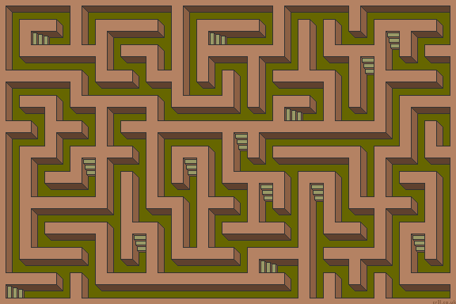
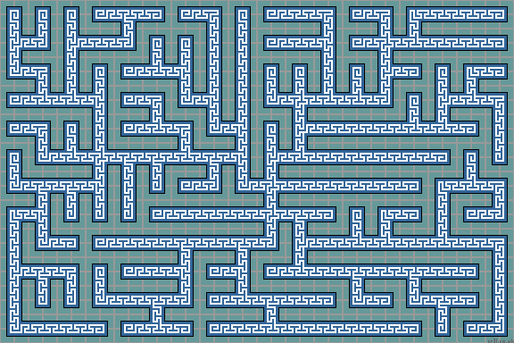
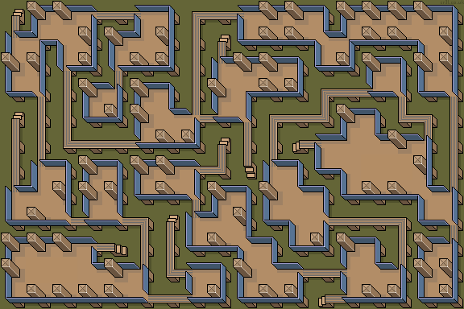

'Perfect' Maze Generator
A random array of tiles can leave many paths unused. A so called 'perfect' maze has every path connected to every other path, so there are no unreachable areas. Also, there are no path loops or isolated walls. There is always one unique path between any two points in the maze. Perfect mazes look more evenly distributed and are more fun to traverse than a random layout, as all paths are used.
To create a perfect maze, you need to follow a step-by-step process. A path is drawn from the current cell to an empty neighboring cell. A list needs to be kept of all cells that have been visited, which may have empty neighbors. If they have none, then the cell is removed from the list.
This simple algorithm generates 'perfect', connected mazes...
First, select a random empty 'start' cell on the stage and add it to the empty 'visited' list. Then to animate the maze, repeat the following loop each step...
1/ Select an already visited cell from the 'visited' list
2/ Make a list of all adjacent empty cells that you could possibly move to
if the list contains at least one cell then
3/ Select one of the adjacent cells at random
4/ Move to the empty cell, making a path as you go
5/ Add the cell to the end of the 'visited' list
else (there are no empty adjacent cells)
6/ Remove the current cell from the 'visited' list
When the 'visited' list is empty, the maze is done. The result will be a perfect, fully connected maze.
The first time the loop is called, the visited list contains only one cell, - the randomly chosen starting cell.
Empty adjacent cells must not lie outside the Stage area. They can either be edge (horizontally or vertically) adjacent or corner (diagonally) adjacent. The algorithm will then produce either edge or corner mazes. Using both edge and corner is also possible.
Random / Last Selector
All mazes can be adjusted using the ran/last selector. This alters the way a cell is selected from the 'visited' list in step 1. By always selecting a random cell from the 'visited' list, many short stubby paths are generated (Prim's algorithm). By always choosing the last cell, long winding paths are formed (recursive backtracker algorithm).
The default is 10%. This means that for each step, there is a 10% chance a random cell is selected and a 90% chance that the last cell in the 'visited' list is selected.
Perfect Trench Maze - 10% ran/last
Tile-0 is unused, so every cell contains a trench. No paths are fused, so the maze is 'perfect'. North and west heading trenches (Tile-2 and Tile-4) have steps. A thoughtful addition for people to enter and leave the maze from ground level.
| 0 | 1 | 2 | 3 | 4 | 5 | 6 | 7 | 8 | 9 | 10 | 11 | 12 | 13 | 14 | 15 |
See Mazes for more info and images.
Stage: Perfect Maze - 'Trench'
Perfect 'Tree' Maze - 90% ran/last
Tile-0 is unused, so every cell contains a path. No paths are fused, so the maze is 'perfect'.
| 0 | 1 | 2 | 3 | 4 | 5 | 6 | 7 | 8 | 9 | 10 | 11 | 12 | 13 | 14 | 15 |
See Mazes for more info and images.
Stage: Perfect Tree Maze - 'Greek'
Weaving
Weaving allows paths to cross over or under each other. The maze remains perfect as no path loops form.
When trapped and weaving is allowed then pass over (or under) the perpendicular straight path to an empty cell beyond.
|
|
Fork Tile Removal
If a cell is selected 2 (or 3) times from the 'visited' list then a 4-way intersection is formed. However, in a weave maze, Tile-15 is a pass-over tile and not a cross-roads tile. The resulting maze will visually appear to be no longer perfect, as a section of path can no longer be reached.
To prevent this from happening, cells are also removed from the 'visited' list if they have only 1 neighbor. This means removing fork tiles before they have chance to possibly become crossroads tiles.
If cross roads (4 way tiles) and dead ends are not allowed, then there can be a situation where the algorithm cannot continue. If a path forms as shown, the central tile cannot be laid. I've never seen this happen, it is quite rare.
Pass By
When trapped and pass-by is allowed then pass by a path of opposite bend to the empty cell beyond. For this to work visually, paths cannot be too wide.
Blob Mazes
Blob tileset mazes are generated in the same way as a 2-edge tileset maze. All corner cells are left at '0'. The result is identical to a 2-edge maze.
As a maze 'edge' is drawn, the corner cell to the left and to the right of the edge is checked. If it has 3 (or more?!) adjacent edge cells with a value of '1', then all adjacent edges and the corner cell are given a value of '1'. This tends to 'fill in' path bends.
|
Here, the corner to the left of the new edge is surrounded by 3 edges. The corner and all 4 of its surrounding edges are made a '1'. The corner to the right of the new edge has only 2 adjacent edges and so is not altered. The result is a small 'land fill' or room creation to the right of the new path. |
Use the ran/last selector to adjust the maze between long paths with small islands and short paths with large island areas.
A perfect maze using the 'Commune' Blob tileset is shown below. There is one unique path between any two points in the maze. Traversing the ground level is forbidden.
See Mazes for more info and images.
Stage: Perfect Blob Maze (10%) - 'Commune'
